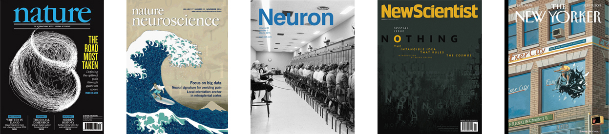

Morality and the Brain: The Right Hemisphere and
Doing Right
Christopher M. Filley, Isaiah Kletenik, Patricia
S. Churchland
Cognitive and Behavioral Neurology – December, Volume 33, Number 4
The Natural Method: Essays on Mind, Ethics, and
Self in Honor of Owen Flanagan
Patricia S. Churchland, MIT Press
How Important is the Brain to the Great
Philosophical Questions?
With guest Patricia Churchland
Jack Russell Weinstein, Why? Radio – December 13
Will Artificial Intelligence Have a Conscience?
An Interview with Patricia Churchland
Ben Dickson, TechTalks – September 28
The Patricia Churchland Interview
Episode 84, Part I: The Hornswoggle Problem,
Part II: Conscience
The Panpsycast Philosophy Podcast – August 2
To Understand the Mind, We Must Understand the Brain
26th Distinguished Lecture on Brain, Learning and Memory
Patricia S. Churchland, January 27, UCI
Deliver Us From Evil: How Biology, Not Religion, Made
Humans Moral
Patricia S. Churchland, New Scientist – September 25
The Nature of Moral Motivation
A Conversation with Patricia S. Churchland
Edge – October 16
Patricia Churchland on How we Evolved a Conscience
Nous – September 15
Out of Mind: Philosopher Patricia Churchland’s Radical
Approach to the Study of Human Consciousness
Julian Baggini Prospect – October 8
Conscience: The Origins of Moral Intuition
Patricia S. Churchland, New York: Norton
How Your Brain Invents Morality
Interview with Sigal Samuel
Patricia S. Churchland, Vox – July 8
Why Mammalian Brains are Geared Toward Kindness
Patricia S. Churchland, The Scientist –
October 1
Patricia Churchland on Conscience, Morality, and the
Brain
Episode 50 / Sean Caroll’s Mindscape: Science,
Society, Philosophy, Culture Arts and Ideas
Patricia Churchland on Conscience: The Origins of
Moral Intuition
Episode 158 / with Dr. Ginger Campbell
Brain Science
Putting Big Data to Good Use in Neuroscience
Terrence J. Sejnowski, Patricia S. Churchland, J. A.
Movshon, Nature Neuroscience – November 17,
Volume 11, 1440-1
Agency and Control: The Subcortical Role in Good Decisions
Patricia S. Churchland, Moral Psychology: Free Will
and Responsibility, Volume 4, Chapter 8, Walter
Sinott-Armstrong, Cambridge, MA: MIT Press
Looking-Glass Wars
Review of The Myth of Mirror Neurons, by G. Hickok
Patricia S. Churchland, Nature – July 31,
Volume 51, July
Evolved Morality: The Biology and Philosophy of Human
Conscience
Frans B.M. de Waal, Patricia S. Churchland, Telmo
Pievani, Stefano Parmigiani, Behavior – 151,
137-141
Touching a Nerve: The Self as Brain
Italian, German, Spanish, Korean, Chinese, Swedish,
Japanese
Patricia S. Churchland, New York: Norton
The Neurobiological Platform for Moral Values
Patricia S. Churchland, Behaviour – 151, 283-296
Foreword to Word and Object (2nd edition)
by W. V. O. Quine, Cambridge, MA: MIT Press
Patricia S. Churchland
Modulating Social Behavior with Oxytocin: How does it
work? What does it mean?
Patricia S. Churchland, Piotr Winkielman,
Hormones and Behavior
Problems with Measuring Peripheral Oxytocin: Can the
Data on Oxytocin and Human Behavior Be Trusted?
Michael McCullough, Patricia S. Churchland, A. J.
Mendez, Neuroscience and Biobehavioral Reviews
– September 2013
Exploring the Causal Underpinnings of Determination,
Resolve, and Will
Patricia S. Churchland, Neuron – December 2013
Our Caring Neutrons
Richard S. Mathis, Science , May 13, Vol 332
If It Feels Good, Perhaps It Is
Margaret Boden, Times Higher Education , May
Braintrust: What Neuroscience Tells Us About Morality
Patricia S. Churchland, Princeton University
Can Innate, Modular “Foundations” Explain Morality?
Challenges for Haidtʼs Moral Foundations Theory
Patricia S. Churchland, Christopher L. Suhler,
Journal of Cognitive Neuroscience – 23:9,
2103-2116.
Moral Decision-Making and the Brain
Patricia S. Churchland,
Oxford Handbook of Neuroethics
– ed J. Illes and B. J. Sahakian, New York: Oxford.
The Brain and It’s Self
Patricia S. Churchland,
Proceedings of the American Philosophical Society
– March 2011, 155(1):41-50.
When It’s an Error to Mirror: The Surprising
Reputational Costs of Mimicry
Liam C. Kavanagh, Christopher L. Suhler,
Patricia S. Churchland, Piotr Winkielman,
Psychological Science
– October 22, Volume 10, 1274-1276
Roots of Right and Wrong
Opinion Special: Science Wakes Up to Morality
Patricia S. Churchland, New Scientist
– October 16